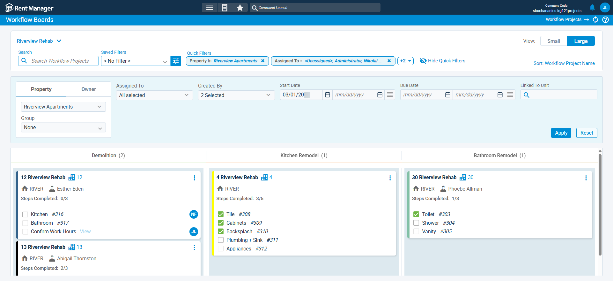

Source: https://rmxhelp.rentmanager.com/Topics/Express/CSH/Workflow-Boards.htm
Workflow Boards (Page)
The Workflow Boards page provides a panoramic view of your open workflow projects, enabling you to easily identify their current status, manage their steps, and track their progress toward completion. Each workflow board corresponds to a workflow template, and only workflow projects generated from those templates display on a board. The stages of a workflow template display as columns on the board, and each workflow project displays as a card in the column. As workflow projects progress through stages, their cards move from one column to the next. Once the workflow project is complete, it is removed from the workflow board.
For example, if you are updating the bathrooms across all units at a property, you can create a workflow project from a template for Bathroom Remodel for each applicable unit at the property, then use the workflow board for that template to quickly view and manage where each unit is in the process.
More Information
Only workflow templates that have the setting Enable visual board view selected are available as workflow boards. For more information, refer to Add a Workflow Template.
Related Privileges
| Group | Privilege | Column |
|---|---|---|
| Service Manager | Workflow Projects | View |
For more information, refer to Control User Access.

The name of the currently selected board displays at the top left of the page. Use the drop-down next to it to toggle between available workflow boards. Workflow projects generated from the corresponding workflow template display on the board. In the drop-down, you can also select Manage Workflow Boards to specify Favorites with the icon, or rearrange the list order using  .
.
Filter Options
The following filter options are available.
| Options | Descriptions | ||||||||||||||||
|---|---|---|---|---|---|---|---|---|---|---|---|---|---|---|---|---|---|
|
Saved Filter |
Use the drop-down to select a saved workflow project filter or click |
||||||||||||||||
|
|
Filters the board to display only workflow projects with criteria that match what you enter in this field. |
||||||||||||||||
|
|
|
||||||||||||||||
|
View |
Determines whether workflow project cards display as Small or Large. If Small is selected, cards display an overview of each workflow project. If Large is selected, cards display the overview as well as details about each step in the card's stage. |
||||||||||||||||
|
Sort |
Click to arrange cards in each stage according to either their Workflow Project Name or Due Date. |
||||||||||||||||
Stages
Each stage in the workflow board corresponds to a step in the associated workflow template. For example, if a workflow template has six stages, the board view displays six columns with names matching the stage names.
Card Information
Each workflow project on a board is represented in a card. Depending on whether the View option is set to Small or Large, each card displays various information about the workflow project and its steps. The steps that display vary depending on the stage the card is in. Once all the steps on the card are completed, it moves to the next column in the board.
Card Fields
The following card fields are available.
| Field | Description | |||||||||||||||
|---|---|---|---|---|---|---|---|---|---|---|---|---|---|---|---|---|
|
Workflow Project |
The name of the workflow project. |
|||||||||||||||
|
Linked Entity |
The entity, if any, that the workflow project is associated with. For example, in a workflow project linked to unit 12 at a property, |
|||||||||||||||
|
Link Information |
Basic information associated with the Linked Entity. The information varies depending on the entity type. For example, a workflow project linked to a unit displays the property's Short Name. If that unit is occupied by a tenant, the tenant's name also displays. |
|||||||||||||||
|
Steps Completed |
The number of steps completed out of the total number of steps in the stage. When all steps are completed, the card moves to the next stage. |
|||||||||||||||
|
Step |
The name of the issue or task, as well as the user assigned to it. Click the step's name to open its details page. |
|||||||||||||||
|
Card Actions
The following actions are available by clicking  .
.
| Option | Description | |||||||||||
|---|---|---|---|---|---|---|---|---|---|---|---|---|
|
Add Issue |
Related Privileges
For more information, refer to Control User Access. Add a service issue step to the stage. For more information, refer to Workflow Project Issue Details (Pop-Up). |
|||||||||||
|
Add Task |
Related Privileges
For more information, refer to Control User Access. Add a task step to the stage. For more information, refer to Workflow Task Details (Pop-Up). |
|||||||||||
|
Delete |
Related Privileges The privileges required for this action depend on what item(s) you want to delete. Deleting issues and tasks in a project require the corresponding privilege.
For more information, refer to Control User Access. Permanently delete the workflow project and, optionally, the issues and tasks linked to it. This action cannot be undone. |
|||||||||||
|
Project Details |
Open the workflow project details page, from which you can configure project's settings, stages, and steps. |